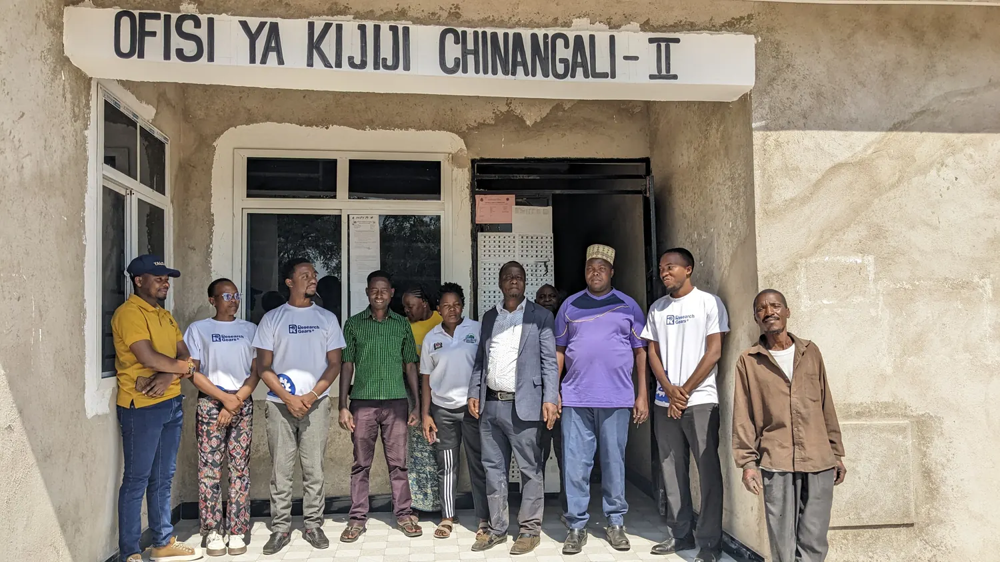
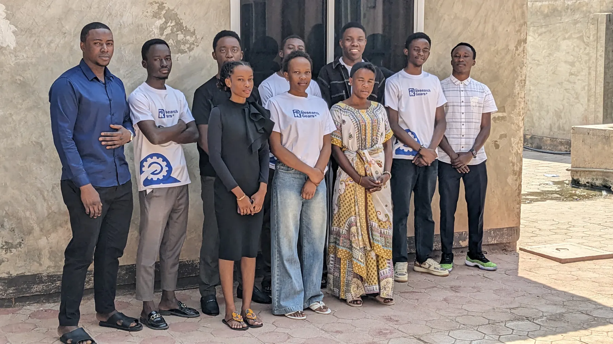

Question
Clarify the problem and the decision it should inform.
Research · Data · Analytical engineering
We bring methodologists and analytical engineers together to shape the full R&D and analytics journey: ask the right question, build trustworthy evidence, and make the result useful in the real world.
The idea is simple
Good decisions need more than data. They need the right question, a sound method, dependable analysis, and a clear path from findings to action.
A connected way of working
Methodologists shape what evidence is needed and how to get it. Analytical engineers make the data, analysis and tools dependable enough to use. We connect both from the first question through learning and implementation.
Clarify the problem and the decision it should inform.
Choose a rigorous approach that fits the context and constraints.
Collect, connect and check the information that matters.
Test assumptions and explain what the evidence can support.
Translate findings into a clear choice or practical next step.
Support use, learn what changes, and improve what comes next.
Efficient by design. We right-size the work to the decision, validate early, document what we do, and reuse reliable workflows. That helps focus time and budget where they can change the outcome.
What we bring together
Engage us for one part of the journey or bring us in to connect the whole thing.
Frame the problem, design a credible study and learn whether a policy, service or idea is working.

02 / DATATurn scattered information into checked, understandable evidence that supports a real decision.

03 / BUILDBuild and validate the systems, prototypes and repeatable workflows that put evidence to work.
The right mix depends on your question, available evidence, timeline and intended use. We define that scope with you before work begins.
From brief to better decisions
We keep the work connected to the decision it needs to support. Each stage has a clear purpose, a check for quality, and an output the next stage can use.
Talk through a projectAgree the problem, audience, constraints and what a useful answer looks like.
Select methods and measures that are rigorous without adding avoidable complexity.
Collect or integrate data with quality checks and agreed governance.
Test the analysis, record assumptions and explain uncertainty and limits.
Shape evidence into a report, dashboard, prototype or decision process.
Support adoption, review what changes, and use that learning to refine the next cycle.
Questions we explore
Our published and developing themes sit where research quality, data practice, technology and better decisions meet.
Ask about relevant examplesThese are areas of work and inquiry, not claims of a specific project result. Ask us for examples relevant to your context.
Trust is part of the method
We agree the ground rules before analysis begins, so people understand how evidence was made and how information will be handled.
Clarify purpose, consent and the appropriate ethics pathway.
Agree access, storage, retention and deletion for project data.
Document methods, assumptions, limitations and uncertainty.
Use AI responsibly, disclose its role where relevant, and keep human review.
A multidisciplinary partner
Gears Analytics grew from practical work helping postgraduate researchers, businesses and organizations solve research and data-analysis problems. Our team brings together perspectives across social sciences, engineering, economics, planning, transport and logistics.
We started in 2019, and the business was registered as Research Gears in 2024, with Gears Analytics as an alternative name. We value methods that are understandable, evidence that is dependable, and solutions people can maintain.
Meet us around your questionStart with the question
Share a little about the decision, research or data challenge. We’ll help you identify a sensible next step.